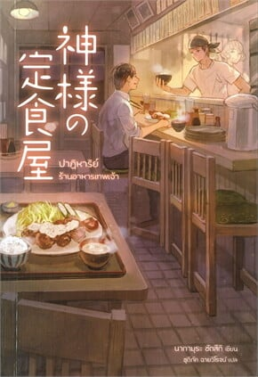

แนะนำนิยายแนวแฟนตาซีลึกลับ อ่านแล้วอบอุ่นหัวใจ สร้างแรงบันดาลใจ

ปาฏิหาริย์ร้านอาหารเทพเจ้า
ผู้เขียน : นากามุระ ซัตซึกิ
ผู้แปล : ชูติภัค ฉายวิโรจน์ สำนักพิมพ์ : NB LITE

"ปาฏิหาริย์ร้านอาหารเทพเจ้า" เป็นเรื่องราวของร้านอาหารเก่าแก่ที่ตั้งอยู่ในเมืองเล็ก ๆ ซึ่งไม่เพียงแต่เสิร์ฟอาหารรสเลิศ แต่ยังมีพลังพิเศษที่ช่วยเปลี่ยนแปลงชะตาชีวิตของผู้คนที่มาเยือน โดยแต่ละตอนจะเล่าถึงเรื่องราวของลูกค้าที่เข้ามาในร้าน และได้พบกับประสบการณ์มหัศจรรย์ที่ทำให้พวกเขาเปลี่ยนแปลงชีวิตไปตลอดกาล ไม่ว่าจะเป็นการเผชิญหน้ากับความฝัน การต่อสู้กับความเศร้า หรือการค้นพบสิ่งที่หายไปในชีวิต หนังสือเล่มนี้ไม่ใช่เพียงแค่เรื่องราวของการทำอาหาร แต่ยังมีปาฏิหาริย์ที่ทำให้ผู้อ่านต้องติดตามไปจนถึงหน้าสุดท้าย แต่ละบทของเรื่องราวเต็มไปด้วยความรู้สึกและความหมายที่ลึกซึ้ง ทำให้ผู้อ่านได้ไตร่ตรองถึงชีวิต ความฝัน และความหมายของการอยู่ร่วมกับผู้อื่น หากคุณกำลังมองหานิยายอบอุ่นหัวใจที่จะทำให้คุณหลงรักและประทับใจอย่างยาวนาน สร้างแรงบันดาลใจ ให้ความรู้สึกดีซาบซึ้ง หนังสือเล่มนี้จะเป็นตัวเลือกที่ยอดเยี่ยม ปาฏิหาริย์ร้านอาหารเทพเจ้า เป็นหนึ่งในหนังสือที่คุณไม่ควรพลาด
Though I Am an Inept Villainess: Tale of the Butterfly-Rat Body Swap in the Maiden Court เป็นนิยายแนวแฟนตาซีย้อนยุคและผจญภัยเอาชีวิตรอดจากภารกิจต่าง ๆ มีทั้งหมด 8 เล่ม
เรื่องนี้มีแปลไทยด้วยกัน 1 เล่ม ชื่อ : นางร้ายมือใหม่ เป็นกำลังใจให้ด้วยนะเจ้าคะ เล่ม 1
สำนักพิมพ์ : PHOENIX-ฟีนิกซ์